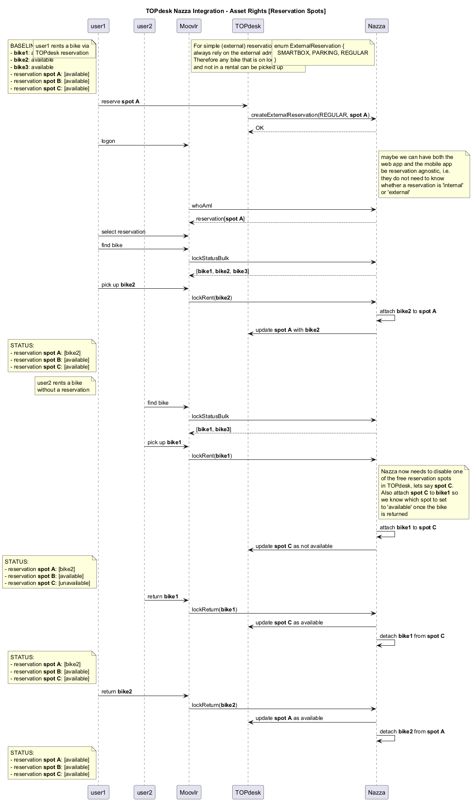

@startuml
title TOPdesk Nazza Integration - Asset Rights [Reservation Spots]
participant user1
participant user2
participant "Moovlr" as app
participant "TOPdesk" as topdesk
participant "Nazza" as nazza
note left of user1
BASELINE STATUS:
- **bike1**: available
- **bike2**: available
- **bike3**: available
- reservation **spot A**: [available]
- reservation **spot B**: [available]
- reservation **spot C**: [available]
end note
/ note left of user1
user1 rents a bike via
TOPdesk reservation
end note
/ note over topdesk
For simple (external) reservations we
always rely on the external administration.
Therefore any bike that is on location
and not in a rental can be picked up
end note
/ note left of nazza
enum ExternalReservation {
SMARTBOX, PARKING, REGULAR
}
end note
user1 -> topdesk: reserve **spot A**
topdesk -> nazza: createExternalReservation(REGULAR, **spot A**)
nazza --> topdesk:OK
user1 -> app:logon
note right of nazza
maybe we can have both the
web app and the mobile app
be reservation agnostic, i.e.
they do not need to know
whether a reservation is 'internal'
or 'external'
end note
app -> nazza: whoAmI
nazza --> app: reservation[**spot A**]
user1 -> app: select reservation
user1 -> app: find bike
app -> nazza: lockStatusBulk
nazza --> app: [**bike1**, **bike2**, **bike3**]
user1 -> app: pick up **bike2**
app -> nazza: lockRent(**bike2**)
nazza -> nazza: attach **bike2** to **spot A**
nazza -> topdesk: update **spot A** with **bike2**
note left of user1
STATUS:
- reservation **spot A**: [bike2]
- reservation **spot B**: [available]
- reservation **spot C**: [available]
end note
note left of user1
user2 rents a bike
without a reservation
end note
user2 -> app: find bike
app -> nazza: lockStatusBulk
nazza --> app: [**bike1**, **bike3**]
user2 -> app: pick up **bike1**
app -> nazza: lockRent(**bike1**)
note right of nazza
Nazza now needs to disable one
of the free reservation spots
in TOPdesk, lets say **spot C**.
Also attach **spot C** to **bike1** so
we know which spot to set
to 'available' once the bike
is returned
end note
nazza -> nazza: attach **bike1** to **spot C**
nazza -> topdesk: update **spot C** as not available
note left of user1
STATUS:
- reservation **spot A**: [bike2]
- reservation **spot B**: [available]
- reservation **spot C**: [unavailable]
end note
user2 -> app: return **bike1**
app -> nazza: lockReturn(**bike1**)
nazza -> topdesk: update **spot C** as available
nazza -> nazza: detach **bike1** from **spot C**
note left of user1
STATUS:
- reservation **spot A**: [bike2]
- reservation **spot B**: [available]
- reservation **spot C**: [available]
end note
user1 -> app: return **bike2**
app -> nazza: lockReturn(**bike2**)
nazza -> topdesk: update **spot A** as available
nazza -> nazza: detach **bike2** from **spot A**
note left of user1
STATUS:
- reservation **spot A**: [available]
- reservation **spot B**: [available]
- reservation **spot C**: [available]
end note
@enduml